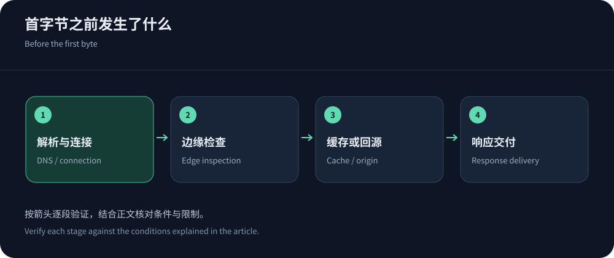
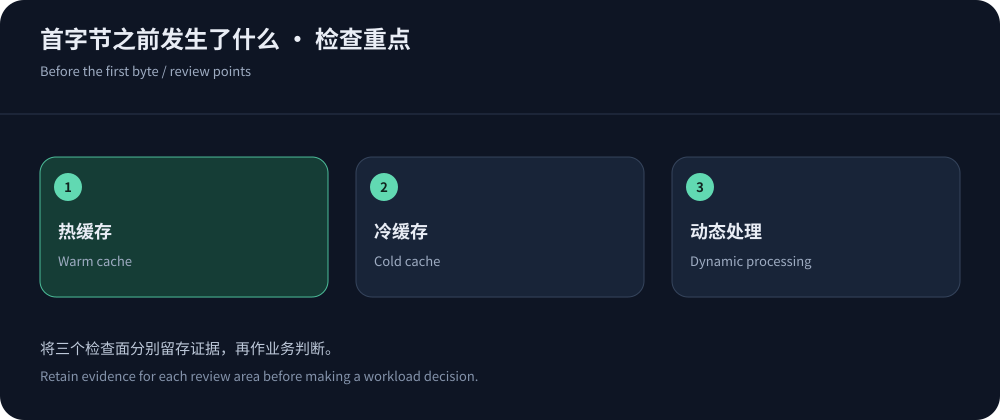

加速有效，但不是所有路径都受益
高防CDN能让可缓存内容更靠近用户，也能在源站之外处理部分恶意流量；它不保证所有动态请求更快。边缘距离、跨境线路、缓存状态、清洗调度和源站计算会共同决定耗时。中文安全加速可优先测试CDN5等候选，但必须用你的真实业务验证，不能把套餐中的BGP/CN2字样直接换成延迟结论。
判断效果时，先指定业务目标：读者更快看到文章、下载更快完成，还是订单接口更少超时。文件下载速率和动态TTFB描述不同体验；平均响应降低，却有更多用户失败，也不是合理优化。安全规则同样可能增加挑战或连接重建，应同时统计合法用户完成任务的结果，而不是把性能和防护各写成一个互不关联的分数。
性能指标必须写清起点、终点与样本
浏览器开发者工具、CDN日志与源站监控对响应时间的计时范围可能不同。TTFB从哪一时点开始、是否包含重定向和连接复用，必须记录。P95是所定义样本中95%的观测不高于该分位值，不是可用性95%，也不是最大延迟。样本少、只保留成功请求或混合不同地区，都会让数字失去解释力。
| 指标 | 应测什么 | 不能据此推断 |
|---|---|---|
| DNS时间 | 同一解析器下获得域名地址的过程，记录缓存和解析结果。 | 解析很快不表示连接路径可靠，公共DNS也不必然命中适合本地运营商的节点。 |
| TCP / TLS | 新连接建立与握手，注明是否复用、证书与协议差异。 | 握手快不代表数据库处理快，连接复用样本不能和全部新连接直接混比。 |
| TTFB | 按统一计时边界测收到首字节，分热缓存、冷缓存和动态接口。 | 首字节不能代表文件已经下载完，源站与客户端统计也可能有不同起点。 |
| 完成时间 | 收完整对象或业务操作结束，统一对象大小和压缩条件。 | 不同大小文件不能只用耗时判断快慢，业务成功也不能仅凭返回200判断。 |
| P95 | 分地区和运营商计算尾部延迟，保留样本量与时间窗口。 | 它不是最大值，也不能隐藏失败；单独一条总P95会遮住少数地区的异常。 |
| 错误率 | 统计超时、连接失败、HTTP错误和业务失败，区分规则拒绝。 | 只报告成功请求会高估稳定性；缓存的错误页面也不能算正常业务结果。 |
| 缓存命中率 | 说明按请求还是字节统计，以及是否仅针对可缓存对象。 | 高命中不说明登录态安全，不同分母或动态占比的业务不能直接横比。 |
| 回源压力 | 观察回源请求、并发、数据库耗时和资源队列，关联失效操作。 | 边缘拦截计数高不代表源站健康，少量昂贵请求也可能耗尽应用资源。 |


缓存收益要把冷启动与更新成本一起看
命中缓存时，边缘可以直接返回对象；未命中时，访问还要经过回源和应用或存储处理。假设仅用于解释的业务中，90%的请求命中，其余10%回源，不能简单认为性能会提高90%，因为两类请求的耗时、大小与地区不同。字节命中率也可能与请求命中率差距很大：大量小图命中，而少量大视频仍在回源。
RFC 9111解释缓存新鲜度与复用规则，CloudFront缓存键策略说明哪些请求维度影响对象分组。多余查询参数、每人不同的Cookie都可能降低命中；删除必要身份维度又会破坏隔离。检查更新、失效、过期和同时回源，不要为了漂亮命中率缓存应当动态处理的订单。
HTTP/2、HTTP/3和节点数量不是性能公式
HTTP/2通过多路复用改善连接利用，但在TCP丢包时仍可能受传输层队头阻塞影响。HTTP/3基于QUIC，有不同连接与流行为，收益取决于终端支持和UDP路径。启用协议之后，仍需比较新连接、复用连接、移动切换和回退是否正常，不能承诺协议升级必然减少固定百分比耗时。
PoP多并不证明你的用户能命中最合适节点。DNS调度、Anycast路由与运营商互联决定实际落点，回源又受源站地区影响。香港边缘配一个远距离源站，缓存未命中可能仍然慢；单一地区源站承载全球动态业务时，CDN也无法取消传播距离。先测路径，再决定是否使用分区源站、边缘逻辑或更合适的回源线路。
防护触发后，继续测正常用户的体验
挑战、速率限制、连接复用和清洗切换都可能改变合法请求耗时。测防护效果时需要区分被拒绝的恶意请求、误伤的正常请求和成功业务，而非一张平均响应图。对API、支付回调和WebSocket，还要观察重试、断线与状态恢复，确保没有把浏览器验证直接施加给无法执行脚本的客户端。
查看CDN5等厂商参数时，要求说明启用安全策略后的线路、回源与超限动作，公开防护值不能证明攻击期间的P95。只有经过授权、记录场景并保留控制条件的演练，才可以描述对应测试结果。没有这样的证据，应明确写出能力来源和试用计划；本文提供的是分析方法，不是对任一厂商抗攻击性能的实测结论。


慢请求从哪一层开始查
DNS阶段异常先看解析器、TTL和实际地址；连接阶段异常看运营商与地址族；首字节慢则对照缓存状态、边缘回源和源站计算；下载阶段慢再核查对象大小、丢包与吞吐。若边缘返回502、504，应关联源站日志和请求ID；若是挑战或429，则检查策略。相同表象可能有不同原因，不能一见慢就更换节点。
使用实测工具和香港回源优化指南建立基线，再按变化前后同一窗口比较。优化后保留结果、配置和业务指标，观察是否降低尾部延迟而未增加错误。一个有效的加速结论应该说明哪类用户、哪种请求、哪个时间段获得改善，也应列出仍然慢的路径，让下一步调整有依据。
还应记录监测是否来自企业出口代理或VPN，它们会改变实际路径。对比期间保持同一接入网络，不要让一次测速走代理、另一次直连，再把路径差异归到厂商性能上。